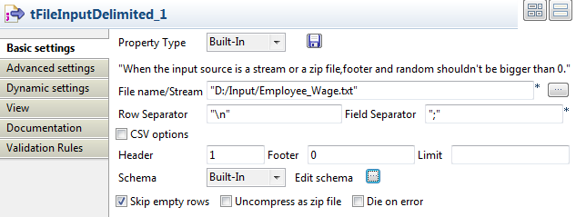
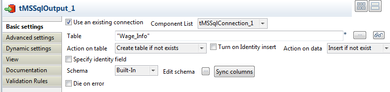
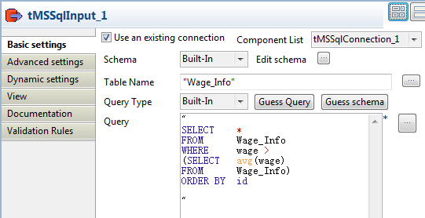
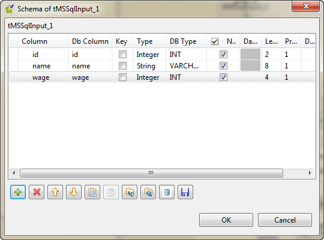

Ce composant est étroitement lié aux composants tMSSqlCommit et tMSSqlRollback. Ils sont généralement utilisés avec un composant tMSSqlConnection car il permet d’ouvrir une connexion pour la transaction en cours.
|
Famille de composant |
Databases/MSSQL | |
|
Fonction |
Le composant tMSSqlConnection ouvre une connexion vers une base de données afin d’effectuer une transaction. | |
|
Objectif |
Ce composant permet de commiter les données d’un Job entier en une seule transaction vers une base de données de sortie. | |
|
Basic settings |
Property type | Peut être Built-in ou Repository. |
|
|
|
Built-in : Propriétés utilisées ponctuellement. |
|
|
|
Repository : Sélectionnez le fichier dans lequel sont stockées les propriétés du composant. Les champs suivants sont alors pré-remplis à l’aide des données collectées. |
|
|
Host |
Adresse IP du serveur de base de données. |
|
|
Port |
Numéro du port d’écoute du serveur de base de données. |
|
|
Schema |
Nom du schéma. |
|
|
Database |
Nom de la base de données. |
|
|
Username et Password |
Informations d’authentification de l’utilisateur de base de données. |
|
|
Additional JDBC parameters |
Ajoutez des informations de connexion supplémentaires nécessaires à la connexion à la base de données. |
|
|
Use or register a shared DB Connection |
Cochez cette case pour partager votre connexion ou récupérer une connexion mise en partage dans un Job père ou un Job fils. Cette option vous permet de partager une seule connexion à une base de données dans plusieurs composants de connexion à des bases de données, dans différents niveaux de Jobs, qui peuvent être des Jobs parent ou enfant. WarningCette option est incompatible avec les options Use dynamic job et Use an independent process to run subjob du composant tRunJob. Utiliser une connexion partagée à une base de données avec un tRunJob ayant l'une de ces options activée fera échouer votre Job. Shared DB Connection Name : définissez ou saisissez le nom de la connexion partagée. |
|
Advanced settings |
Auto commit |
Cochez cette case pour que, lorsqu’une déclaration est terminée, la méthode commit soit appelée automatiquement sur cette déclaration. |
|
|
tStatCatcher Statistics |
Cochez cette case pour collecter les données de log, aussi bien au niveau du Job qu’au niveau de chaque composant. |
|
Utilisation |
Ce composant est généralement utilisé avec des composants MSSql, notamment les composants tMSSqlCommit et tMSSqlRollback. | |
Ce scénario décrit un Job lisant des données d'un fichier texte, relatives aux employés, insérant les données dans une table d'une base de données MSSQL et extrayant les données les plus utiles de la table, pour les afficher dans la console.
Ce scénario comprend les composants suivants :
un tMSSqlConnection : établit une connexion au serveur MSSQL.
un tFileInputDelimited : lit le fichier d'entrée, définit la structure des données et les envoie au composant suivant.
un tMSSqlOutput : écrit les données qu'il reçoit du composant précédent dans une table d'une base de données MSSQL.
un tMSSqlInput : extrait les données de la table selon une requête SQL.
un tLogRow : affiche les informations reçues du composant précédent dans la console.
un tMSSqlCommit : commite la transaction sur le serveur MSSQL connecté.
Déposez les composants suivants de la Palette dans l'espace de modélisation graphique : un tMSSqlConnection, un tFileInputDelimited, un tMSSqlOutput, un tMSSqlInput, un tLogRow et un tMSSqlCommit.
Connectez le tMSSqlConnection au tFileInputDelimited à l'aide d'un lien Trigger > OnSubjobOk.
Reliez de la même manière le tFileInputDelimited au tMSSqlInput et le composant tMSSqlInput au tMSSqlCommit.
Connectez le tFileInputDelimited au tMSSqlOutput à l'aide d'un lien Row > Main.
Répétez l'opération pour connecter le tMSSqlInput au tLogRow.
Procédure 7.1. Ouvrir une connexion au serveur MSSQL
Double-cliquez sur le composant tMSSqlConnection pour ouvrir sa vue Basic settings.

Dans le champ Host, saisissez l'adresse IP ou le nom de l'hôte du serveur MSSQL, 192.168.30.47 dans cet exemple.
Dans le champ Port, saisissez le numéro du port du serveur de la base de données, 1433 dans ce scénario.
Dans le champ Schema, saisissez le nom du schéma, dbo dans cet exemple.
Dans le champ Database, saisissez le nom de la base de données, talend dans ce scénario.
Dans les champs Username et Password, saisissez respectivement votre identifiant et votre mot de passe de connexion à MSSQL.
Procédure 7.2. Lire les données d'entrée
Double-cliquez sur le composant tFileInputDelimited pour ouvrir sa vue Component.
Cliquez sur le bouton [...] à côté du champ File Name/Stream afin de parcourir votre système jusqu'au fichier d'entrée, par exemple D:/Input/Employee_Wage.txt. Ce fichier texte contient trois colonnes : id, name et wage.
id;name;wage 51;Harry;2300 40;Ronald;3796 17;Theodore;2174 21;James;1986 2;George;2591 89;Calvin;2362 84;Ulysses;3383 4;Lyndon;2264 17;Franklin;1780 86;Lyndon;3999
Dans le champ Header, saisissez 1 pour ignorer la première ligne du fichier d'entrée.
Cliquez sur Edit schema pour définir les données à passer au composant tMSSqlOutput. Dans cet exemple, définissez id comme la clé (cochez la case Key) et spécifiez la longueur (Length) et la précision (Precision) pour chaque colonne.
Cliquez sur OK pour fermer l'éditeur de schéma. Une boîte de dialogue s'ouvre, dans laquelle vous pouvez choisir de propager le schéma au composant suivant.

Pour plus d'informations, consultez la section intitulée « tFileInputDelimited ».
Procédure 7.3. Ecrire les données dans la table de la base de données
Double-cliquez sur le tMSSqlOutput pour ouvrir sa vue Basic settings.
Saisissez les informations requises pour la connexion ou utilisez une connexion existante précédemment configurée. Dans cet exemple, cochez la case Use an existing connection. Si plusieurs connexions sont disponibles, sélectionnez celle que vous souhaitez utiliser, dans la liste déroulante Component List.
Dans le champ Table, saisissez le nom de la table dans laquelle vous souhaitez écrire les données : Wage_Info dans ce scénario. Vous pouvez également cliquer sur le bouton [...] à côté du champ Table pour ouvrir une boîte de dialogue et sélectionner une autre table.
Sélectionnez Create table if not exists dans la liste déroulante Action on table.
Sélectionnez Insert if not exists dans la liste déroulante Action on data.
Cliquez sur Sync columns pour récupérer le schéma du composant précédent.
Procédure 7.4. Extraire des informations de la table
Double-cliquez sur le composant tMSSqlInput pour afficher sa vue Component.
Cochez la case Use an existing connection. Si plusieurs connexions sont disponibles, sélectionnez celle que vous souhaitez utiliser, dans la liste déroulante Component List.
Cliquez sur Edit schema pour définir la structure des données à lire depuis la table. Dans cet exemple, vous devez lire les trois colonnes de la table.
Dans le champ Table Name, saisissez le nom de la table de laquelle vous souhaitez lire les données : Wage_Info dans ce scénario.
Dans le champ Query, renseignez la requête SQL à exécuter sur la table spécifiée. Pour obtenir les données relatives aux employés dont le salaire est supérieur à la moyenne et les classer par ID, saisissez la requête SQL comme suit :
SELECT * FROM Wage_Info WHERE wage > (SELECT avg(wage) FROM Wage_Info) ORDER BY id
Appuyez sur les touches Ctrl+S pour sauvegarder votre Job.
Exécutez le Job en appuyant sur la touche F6 ou en cliquant sur le bouton Run de la vue Run.
La console affiche l'ID des employés dont le salaire est supérieur à la moyenne, leur nom et leur salaire. Les employés sont classés par ID.